تذكيرات مرتبطة بالموقع تنطلق تلقائيا عند وصولك إلى أي مكان أو مغادرته.
ضع دبوسا على الخريطة وسيرسل لك ذكرني تنبيها في اللحظة التي تصل فيها — أو تغادر.
يحتاج ذكرني إلى صلاحية الموقع والإشعارات لكي يعمل بشكل موثوق في الخلفية.
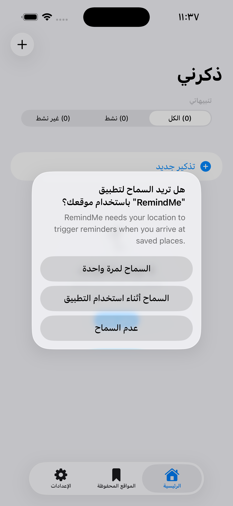
02_location_permission.pngتظهر رسالة طلب الإشعارات في نفس الوقت. اضغط السماح لاستقبال تنبيهات التذكيرات.
يمكنك مراجعة كلا الصلاحيتين في أي وقت من الإعدادات ← الصلاحيات.
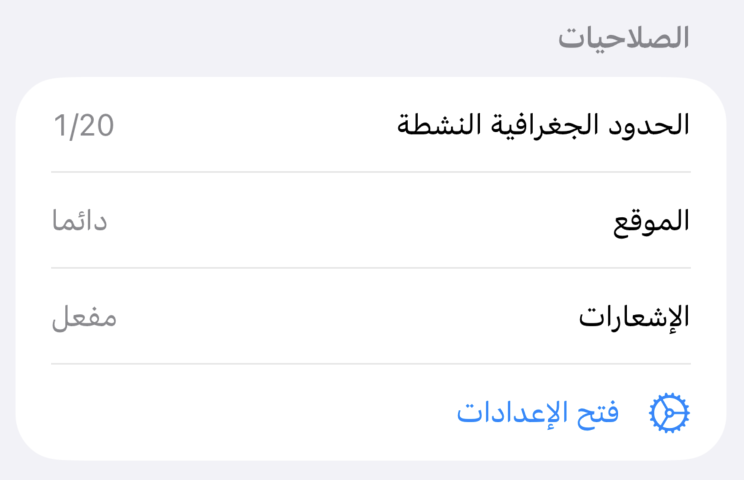
03_permissions_status.pngمن العنوان إلى الموقع إلى نوع التنبيه — كل شيء في شاشة واحدة.
اضغط + في أعلى الشاشة الرئيسية، أو اضغط تذكير جديد في أسفل القائمة.
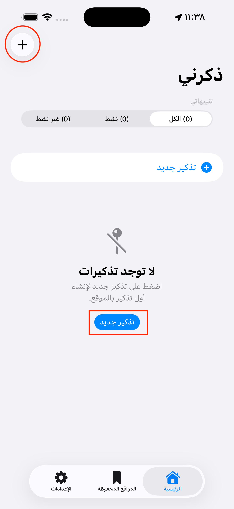
04_add_button.png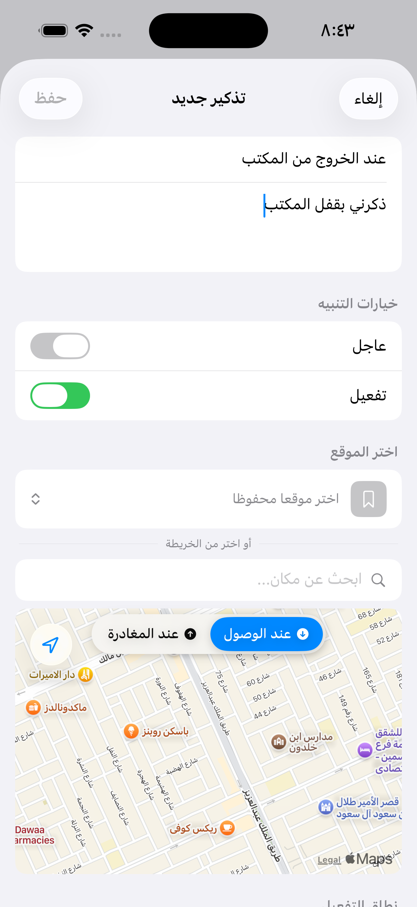
05_add_title.pngأ — اضغط على الخريطة لوضع دبوس في أي نقطة بالضبط.
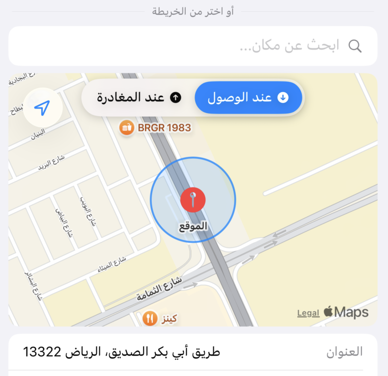
06_map_tap.pngب — ابحث عن عنوان أو اسم مكان في شريط البحث فوق الخريطة.
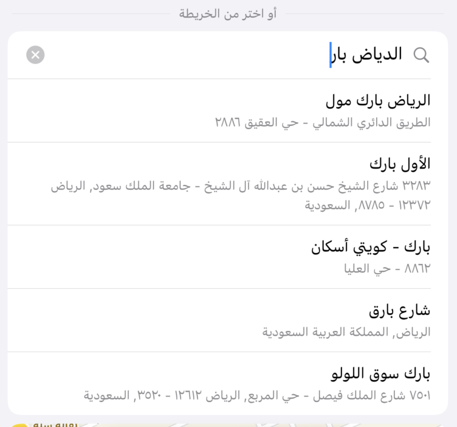
07_location_search.pngج — اختر موقعا محفوظا من مكتبة أماكنك المفضلة.
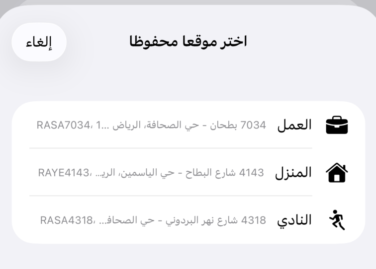
08_saved_location_picker.pngاسحب المنزلق لاختيار المسافة المطلوبة. تتكبّر الخريطة تلقائيا لتُظهر الدائرة.
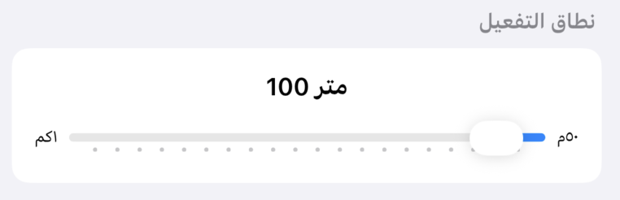
09_radius_slider.png| النطاق | الأنسب لـ |
|---|---|
| ٥٠–١٠٠ م | محل بعينه أو مدخل مبنى |
| ٢٠٠–٥٠٠ م | حي سكاني أو منطقة تجارية |
| ١٠٠٠ م | منطقة أو مدينة بأكملها |
تطفو لوحة عند الوصول / عند المغادرة أعلى الخريطة. اضغط أي خيار — تتحدث الدائرة فورا لتعكس اختيارك.
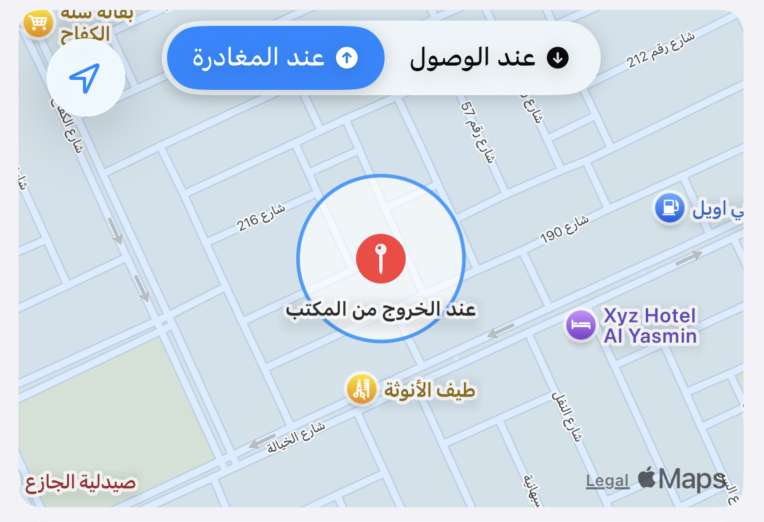
10_trigger_event.png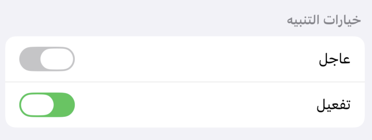
11_alert_type.png| النوع | السلوك |
|---|---|
| تذكير عادي | إشعار عادي بصوت مناسب |
| تذكير عاجل | صوت تنبيه عالٍ — يُشغَّل حتى في وضع عدم الإزعاج والصامت |
اضغط حفظ في أعلى الشاشة. يظهر التذكير في قائمتك وتبدأ المراقبة فورا.
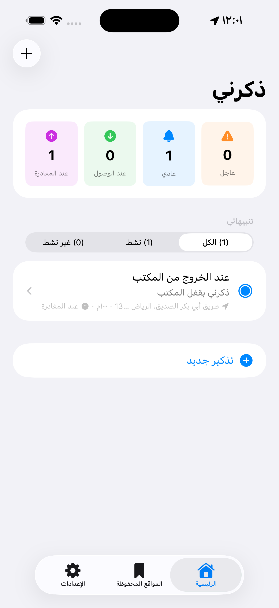
12_saved_reminder_list.pngاحفظ حتى ٢٠ موقعا وأعد استخدامها عند إنشاء التذكيرات — دون بحث في كل مرة.
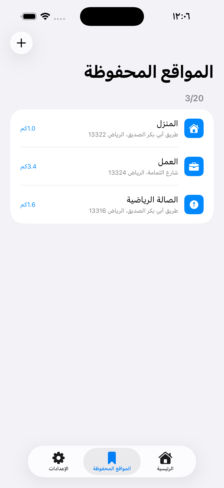
13_saved_locations_screen.png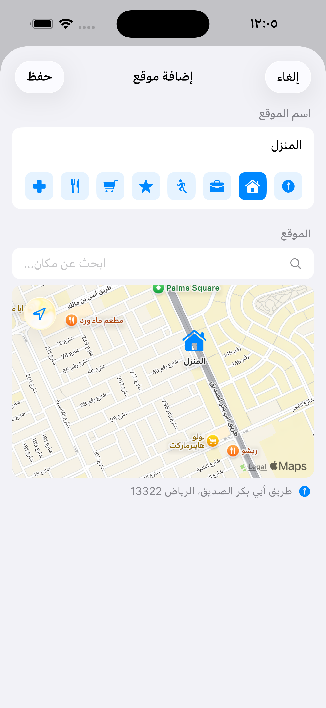
14_add_saved_location.pngعند إنشاء تذكير اضغط اختر موقعا محفوظا. تنزلق قائمة لأعلى بأماكنك المحفوظة مع علامة اختيار على الموقع المحدد.
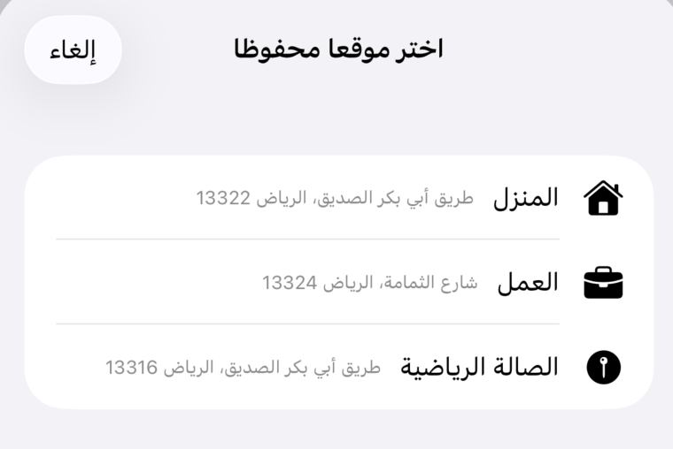
15_saved_location_in_reminder.pngاسحب أي موقع محفوظ نحو اليسار لإظهار خياري تعديل وحذف.
شريط إحصاءات، وأعداد تصفية مباشرة، وتبديل بنقرة واحدة — كل ذلك يُبقي قائمتك منظمة.
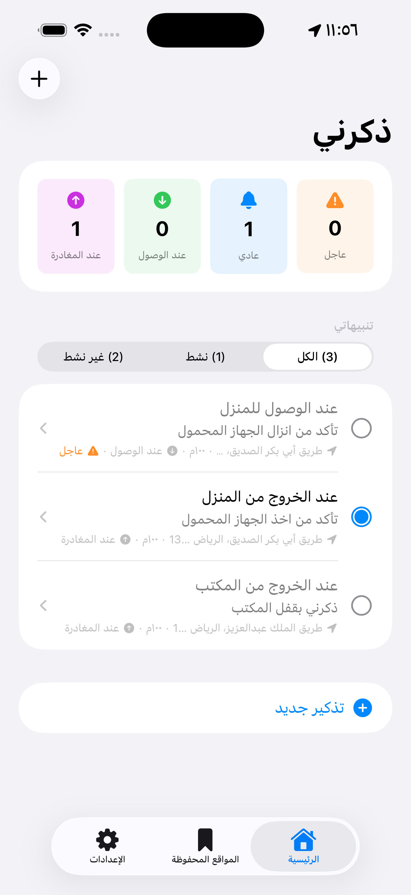
16_home_layout.png| البطاقة | المعنى |
|---|---|
| ⚠️ عاجل | التذكيرات النشطة من نوع عاجل |
| 🔔 عادي | التذكيرات النشطة من نوع عادي |
| عند الوصول | التذكيرات النشطة المرتبطة بالوصول |
| عند المغادرة | التذكيرات النشطة المرتبطة بالمغادرة |
استخدم الكل / نشط / غير نشط لتصفية قائمتك. تتحدث الأعداد تلقائيا.
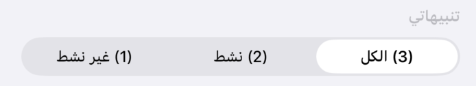
17_filter_bar.pngاضغط الدائرة على يسار أي صف لإيقاف المراقبة أو استئنافها دون حذف التذكير.
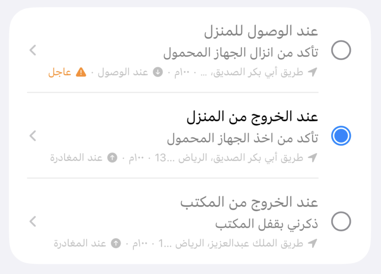
18_toggle_active.pngاضغط على أي تذكير لفتح صفحة تفاصيله.
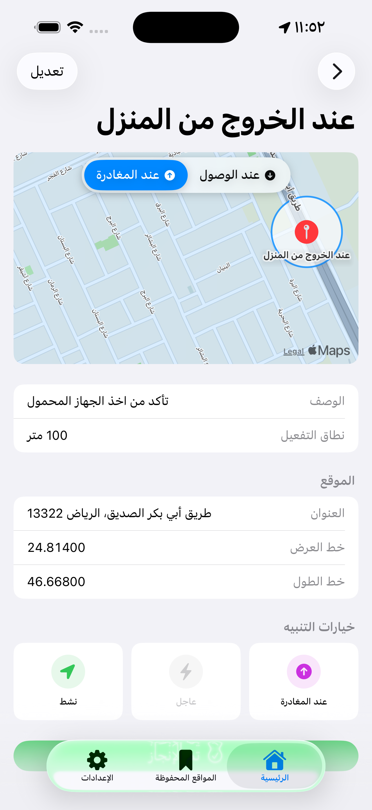
19_reminder_detail.png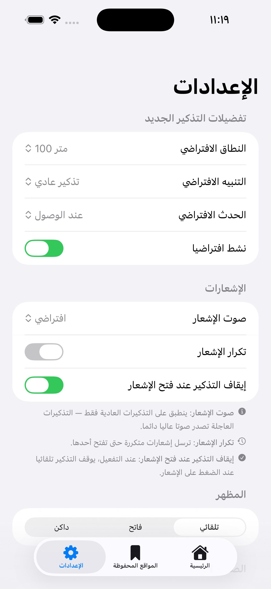
20_settings_screen.pngاختر تلقائي (يتبع إعداد الجهاز)، أو فاتح، أو داكن.
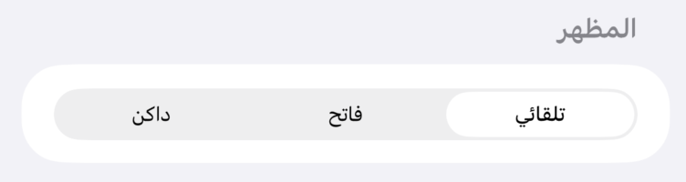
21_appearance_picker.pngاضغط على خانة اللغة للتبديل بين العربية والإنجليزية فورا — لا يحتاج إعادة تشغيل.
يفتح التطبيق مباشرة على صفحة تفاصيل ذلك التذكير، بغض النظر عن الشاشة المفتوحة.
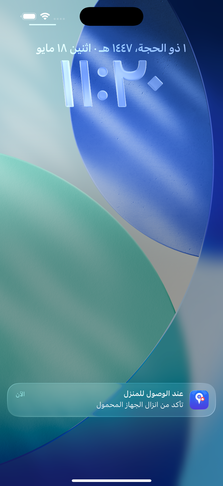
22_notification_banner.png| الإعداد | ماذا يحدث عند الضغط |
|---|---|
| مفعّل (افتراضي) | يوقف التذكير ويفتح صفحة التفاصيل |
| معطّل | يفتح صفحة التفاصيل والتذكير يبقى نشطا |